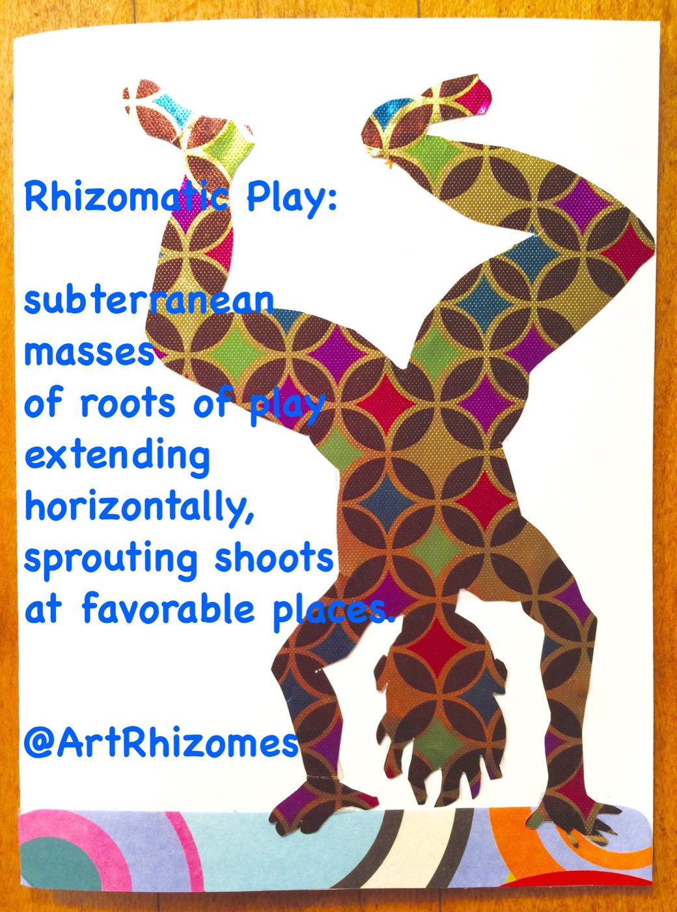

It is through play that we first spoke the languages of the arts — music, word play, drawing, dancing, acting.
Whether we use these languages as teens and adults depends on our willingness to take risks, fail, persevere, trust and support one another.
Deliberately re-entering a playful state can reconnect us with the open, interest-driven way in which we first explored materials, social connections, space and time. Play skills can be relearned.
Learning (or re-learning) how to play helps us delve into the enjoyment of these languages, rather than our well-known product-based learning. The importance of creative play in childhood is supported by decades of research.
When is the last time you lost yourself in the act of free play?
Often, the reason we "zone out" is because we need to zone in to creative, open-ended play. Play is enlivening, experiential and self-generating: our love of learning started out as a zest for play. During play, we master skills through the pleasure of the activity.

More than a method — a stance. These are the convictions behind every Playshop.
The arts are a portal to play, and play is a portal to healing — to growing the courageous imagination we need to bring about a belief in the possibility of change.
We need more than trauma-informed teaching; we need play-informed teaching that builds courageous imagination about what can be.
Our belief in the possibility of change is connected to our ability to play in diverse ways.
A child's belief in possibility is connected to their ability to play — nurtured by practices that build trust, collaboration, embrace tension, and build bridges between ideas and between cultures.

The ability to play, dream and reimagine fosters hopefulness and overall well-being. But what if play is absent or disappearing? A privileged minority receives a play-rich, inquiry-based curriculum, while the average first-grader has less than an hour of unstructured, play-rich time in a seven-hour school day.
after Shawn Ginwright — activist, author & educatorExplore the Playshops, or contact me to co-design one for your group.
Explore Playshops →